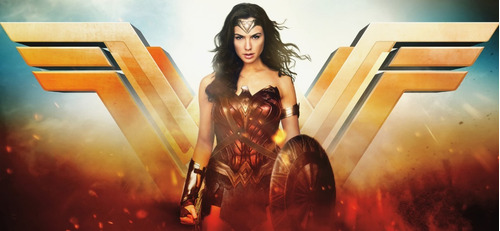

GAL GADOT
Gal Gadot nasceu em Petah Tikva e foi criada na cidade vizinha de Rosh HaAyin, no Distrito Central de Israel. Em hebraico, seu primeiro nome significa "onda" e o segundo "margens dos rios".
Criada em um ambiente judeu, em uma família israelense, teve seu avô prisioneiro no campo de concentração de Auschwitz, sobrevivendo, junto de sua avó, ao Holocausto.
A carreira de Gadot começou longe dos cinemas: Aos 18 anos, ela foi coroada Miss Israel. Logo depois, serviu no exército israelense por dois anos. Ao abandonar as funções militares, decidiu estudar direito e relações internacionais. Sua estreia em Hollywood se deu em Velozes & Furiosos 4 (2009), interpretando Gisele Yashar e divindo set com astros como Vin Diesel e Paul Walker. A atriz venceu seis outras atrizes na disputa pelo papel e revelou que seu conhecimento em armas contribuiu para o sucesso nas audiências. Seu principal reconhecimento vem do filme Mulher Maravilha.
HISTÓRIA - MULHER MARAVILHA
Mulher-Maravilha, filha de Hipólita e do deus grego Zeus. É uma dos personagens principais das revistas e histórias em quadrinhos e em outras mídias. Criada pelo psicólogo William Marston e pelo ilustrador H. G. Peter.A superheroína fundou a Liga da Justiça, vivendo uma vida dupla como Mulher-Maravilha e como Diana Prince.
Muito antes de se tornar a Mulher-Maravilha, Diana nasceu em Themyscira, com o seus pais sendo Hipólita e Zeus. E, como o seu sangue materno era humano e sangue paterno era de um deus, Diana viria a ser uma semi-deusa. Com o seu nascimento a mesma recebeu muitas habilidades humanas, quanto habilidades de deuses.Tempos mais tarde, a mesma herdou o Laço da Verdade pelos Deuses do Olimpo, o Laço da Verdade impede o individuo de contar mentiras e falar apenas a verdade quando esta amarrado no laço.
OUTROS FILMES:
- Veloses e Furiosos
- Liga da Justiça
- Alerta vermelho 